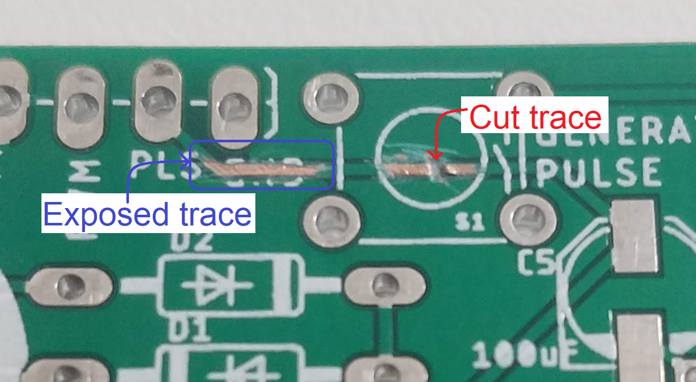
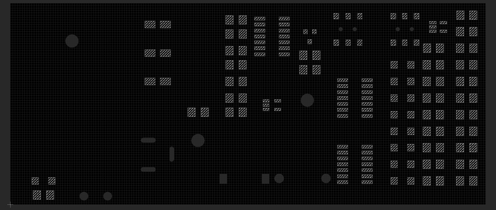

EENG 393
In Lab 12 - Soldering Skills
Requirements
There is no turn-in associated with this inLab. You will need to follow the instructions
given below in order to learn how to fix the Atari Punk Console.
Board modification techniques
You may need to modify a trace on your power supply board. This may be
a result of a trace going to the wrong location or a trace that needs
to be placed between two components. At the
outset, these are techniques that I have picked up in my experience
working with PCB. There are companies that do nothing but repair PCB,
one such company is
Circuit Medic,
their web site has lots of good pictures and valuable information.
- Removing connections. Sometimes you've made a connection between
two soldered components that needs to be removed. If you can't, or
do not want to, remove either of the components, then you will need
to cut the trace joining the two components. The process is as
simple as it sounds. Use a utility
knife or Xacto knife and make repeated cuts across a trace
until the two ends are electrically disconnected. Since the
copper laid on top of the fiberglass substrate is about 90µm
thick, it does not take much work to get through the copper.
In the image below, the brown color is the fiberglass, sometimes
mistaken for copper. Some of the green solder mask was removed
on either side of the cut - we did this to test how easily it
could be removed (see the next section).

Sometimes you do not want to physically damage the trace because
the trace is connecting other elements that need to stay connected.
In this case, you will need to remove the lead from the PCB.
You can do this by lifting the offending lead off the PCB. You
can make this process much easier if you identify the problem pin
before assembly of the PCB. In which case, avoid putting solder
paste on the pad that will receive the pin that needs lifted. Then
after reflowing the PCB, you can just lift the pin horizontally.
If the pin is already soldered to the PCB then you will need to
heat the pin and pad while lifting the pin with your tweezers.
This takes a fair degree of manual dexterity.
- Adding connections. Instead of having an unwanted connection
between components, another favorite mistake is to forget to
make a connection between two components. There are a few ways
that this can be fixed, all by making the connection with a piece
of wire. Since most PCBs are green, there is a
tendency to camouflage the repair by using green wire - it blends in
with the PCB and hence is less notices. Hence the term for adding a
wire to a PCB to fix an error is called a "green wire fix".
When selecting wire to use the smallest diameter solid core wire
you can get your hands on. Solid core wire holds the bends you
put into it while routing it between the two terminals. The wire
should never run over a component, run only vertical and horizontally
(in the X/Y direction of the PCB) across the PCB and tape the wire
down every centimeter after the wire has been soldered.
The PCB presents a host of opportunities
to solder wires to it. In general anything shiny is a good place
to solder a wire to. This is a time when having a via on a signal
trace works in your favor. If you are trying to solder a wire to
a component, its a good idea to add some extra solder to the
terminal of the device you are going to solder the wire. I
like to tin my wires before trying to connect them. This way I have
extra solder on the connection point and wire so I do not have
to introduce it during the soldering process. Trying to add
solder while holding a wire and soldering iron requires a third
arm most of us lack. In addition, I like to make a really small
loop on the end of the wire that I am soldering to the component.
I make the loop using my tweezers while looking at the arrangement
under the Mantis. The hole in the loop allows some of the solder
from the component to migrate upwards and make a more mechanically
durable connection between the wire and component.
If there is no convenient point to solder a wire to, you can make
an solderable surface on almost any trace by carefully removing
the solder mask from over the trace. I've done this with an
Xacto knife and magnifying system in the blue "Exposed trace" in
the image above. Slowly chip
away the solder mask revealing the copper beneath. I've also
tried to use a wire wheel attached to a Dremmel tool, but found that
this removed the solder mask from a large swath of the PCB including
regions that I intended to stay covered. Regardless of the method
used, its important to tin the newly exposed copper as soon as
possible to protect against oxidation. By tinning, I mean, add a
layer of solder over the exposed copper.
Soldering Skills -Safety
There is no substitute for "hands-on learning" when it comes
to mastering the variety of soldering techniques needed to fabricate,
maintain and repair electrical circuits. That said there are
some ground rules that students in my classes are expected to
follow when exploring and experimenting with soldering.
- Rule #1 - eyes
- When working with a soldering iron and solder you must wear
some form of eye protection. Since the danger comes from the temperature
of the liquid solder, not its kinetics energy, conventional eye wear
is acceptable. If you do not wear eye glasses, maybe you have a pair
of lightly tinted sunglasses? If not, then you will need
to wear safety glasses - grab a pair at the start of the term,
keep them with you and use them!
- Rule #2 - skin
- The second safety rule is to keep your mind focused on the
soldering equipment you are working with. Avoid engaging in any activity
that is not germane to the task at hand. It's easy to forget that the
equipment that we work with is many hundreds of degree hot.
- Rule #3 - chemicals
- Chemically speaking, solder is some pretty nasty stuff and is
generally incompatible with a thriving human life. So, repeat after me,
"after all soldering work I will wash my hands." The corollary to this
is that food and drink is not a part of lab culture. Sealed beverage
containers are OK, but a late night extra large pizza should be eaten in
an adjacent classroom - after you wash your hands.
- Rule #4 - buddy system
- Let's watch each others backs. If you see something that could
lead to injury, please speak out. People do not like to be embarrassed
or talked down to, so take a moment to reflect on how best to approach
the situation before firing off your mouth. Since you may not fully
understand what is going on, maybe a leading question would be a good
place to start - "Hey is everything OK here?". Asking and getting
someones permission to receive advice is a powerful technique -
"May I show you how to hold the soldering iron with your hands? It
seems that your feet are not working so well." The less pressure
you use to make your point, the better the outcome.
Soldering the Board
The reflow soldering process is a quick and easy way to solder
all of your surface mount components simultaneously. What I find
best is that you can perform most of the work at room temperature
and its super easy to make corrections prior to committing to
making a soldered connection.
The first step is to put solder paste on all the surface
mount pads on the PCB. In a professional setting you would have made a
stainless steel stencil from layer 31 "tCream" of your EAGLE layout.
This EAGLE layer (shown in the image below), creates holes everywhere the
the soldermask is omitted from the surface of the PCB
for
surface mount parts.

This stencil is held in placed over the PCB and
a quantity of solder paste is pushed over the stencil surface with a rubber
squeegee until the paste has been sufficiently deposited into all the
holes. The stencil is then removed and the PCB now has the perfect
amount of solder on each of its pads. Check out
this video
to see the process in action.
We do not have a stencil for our boards so we are going to have to use
the solder paste dispensing gun. Use it to dispense blobs of solder
paste about 1/2 the size of each surface mount pad. If the pads of
an IC are so close that it is impractical to put paste on each pad,
you can put a thin trail of paste across all the pads. While putting
solder paste and components down, you are able to mop-up
any stray solder paste with a paper towel.
Next, place the surface mount components on the PCB. If we were in
industry this might be done with a pick and place machine. A pick
and place machine holds
multiple reels of components and uses a high-speed mechanical arm to
grab a component from the reel and place it on the PCB (which has
already had solder paste applied). Most pick and place machines use
a camera to verify the position of the PCB by looking for a registration
mark on the PCB. Check out
this video
to see a pick and place machine in action. As you may have guessed,
we do not have a pick and place machine in our lab, so you will have to
carefully place the SMT components using tweezers acquired in a previous
class.
After the solder paste and surface mount components are all places
its time to reflow the PCB. The reflow process converts the solder
paste into liquid solder by burning off the volatile chemicals in
the solder paste and then melting the small solder balls suspended
in the paste. If we were in industry we might use a reflow oven.
A reflow oven is a several meters long conveyor belt that runs through
heated zones causing the solder paste to heat-up according to the
temperature profile provided by the solder paste manufacture. An
example profile for common Kester solder pastes is shown in the image
below.
The temperature profile shown above would require four zones;
- to pre-heat the PCB,
- to heat soak the PCB,
- to reflow the solder paste,
- to cool the PCB.
If you want to see a reflow oven in action, watch
this video
Since we do not have a reflow oven, we are going to have to use the
reflow skillet technique. To do this, carefully place the PCB onto
the
cold skillet. Turn the heat all the way up on the
skillet and let the board "cook" for about 8 minutes. During the time
the solder paste will ooze all over the place, dry out, and then
magically turn into liquid solder. The surface tension of the
liquid solder tends to remove bridge in most cases.
After any green wire fixes are in place, its time to attached the
through hole components. When possible it's best to solder these components
from the bottom of the PCB. In a professional setting you would run the
PCB over a standing wave of liquid solder in a process called wave soldering.
Click on
this link
to see a video of the process in action.
You may have guessed that we don;t have a wave soldering machine in our labs
so you are going to have to hand solder the components. To do this, place the
components into the PCB and solder them from the bottom.